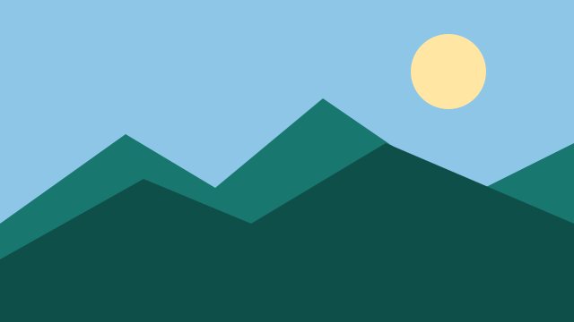

Frontend · CSS
CSS без загадок
От кода к результату: селекторы, каскад, раскладка, БЭМ и адаптивность. Браузер сам выбирает, какое правило победит.
Это живая страница, не скриншоты. Каждый пример — настоящий элемент и настоящее правило. Стрелки ← →, F — на весь экран, X — инспектор, C — выключить CSS.
HTML — что есть
<button class="btn">Нажми</button>
CSS — как выглядит
.btn {
color: white;
background: #18786f;
}
Результат
НажмиПрежде чем писать CSS
Три идеи, из которых состоит любое правило
HTML создаёт элемент. Селектор его находит. Свойство меняет оформление — а браузер решает, какое правило применить.
- Элемент Заголовок, абзац или кнопка существуют и без CSS. Выключите стили клавишей C — разметка останется.
- Селектор Запись
.btnвыбирает элементы сclass="btn". Решётка#выбираетid. - Свойство Внутри
{ }написано, что меняем:color,padding,background.
Одно и то же свойство — разный результат
00
Блок 00 из 08
Основы CSS
Как браузер находит элементы и выбирает, какое правило победит
Основы CSS · Подключение
Три способа подключить CSS
Один и тот же синий абзац можно получить тремя путями. Обслуживать их придётся по-разному.
Внешний файл
<link rel="stylesheet" href="style.css">
Много страниц, кеш браузера. Основной способ в проектах.
<style> в HTML
Не нужен отдельный файл. Удобно для одной страницы, трудно переиспользовать.
Атрибут style
style="color: blue" — быстрая правка. Код повторяется, приоритет высокий.
Результат один, источник разный
Пример текста
Основы CSS · Селекторы
Тег, класс, id и атрибут
Класс можно повесить на много элементов. id уникален и слишком силён, чтобы красить им вёрстку: его оставляют якорям и скриптам.
pЛюбой абзац. Слабый селектор: его легко перебить..noteи#menuКласс — для повторяемого блока. Одинidна страницу.[type="text"]Атрибут выбирает поле по его настройке, без лишнего класса.
Подсветите, кого выбрал селектор
Текст
Заметка
Меню
Основы CSS · Комбинаторы
Пробел, >, точка и запятая
Пробел достаёт абзац на любой глубине. > — только прямого ребёнка. .card.dark — оба класса на одном элементе. Запятая — список селекторов.
- Потомок и ребёнок Вложенный абзац станет синим, но не жирным: жирным помечен только прямой
p. - Два класса подряд
.card.dark— это не два элемента, а один с обоими классами. - Запятая
.card, p { margin: 0 }отдаёт правило и карточке, и абзацам.
Включайте правила по одному
Первый абзац
Вложенный
Основы CSS · Каскад
Кто побеждает, если правил несколько
Сначала сравнивают специфичность. Если она равна, побеждает правило, которое ниже в коде — и файл, подключённый позже.
- Тег слабее класса
p— это 0–0–1..note— 0–1–0. Класс важнее. - Равная сила — ниже по файлу Два
.noteспорят порядком, а не «силой имени». !important— не балл Такие объявления сравниваются отдельно. Ими каскад ломают, а не чинят.
Один абзац, три уровня силы
Сообщение
Основы CSS · Специфичность
Тег, класс, id, атрибут style
Для обычных авторских стилей: тег < класс < id < inline. !important перебивает их все и сам перебивается только другим !important.
- Считают тройкой id, потом классы и атрибуты, потом теги.
#warning— это 1–0–0. - Inline сильнее селектора
style="color: purple"побеждает id, пока нет!important. - Не копите силу Длинные цепочки и
!importantделают следующее правило всё дороже.
Добавляйте более сильное правило
Важно
Основы CSS · Наследование
Что дети получают от родителя
color, font-family, font-size, line-height и text-align переходят вниз. margin, padding, border, background и width — нет.
- Текст красит себя сам Цвет абзаца синий, хотя правило написано на карточке. Это наследование, не селектор.
inheritиinitialПервое явно берёт значение родителя. Второе возвращает начальное — и синий пропадает.- Рамка ребёнка своя Оранжевая рамка не получила padding родителя: отступ остался только у карточки.
Оборвите наследование цвета
Текст статьи
padding родителя сюда не пришёлОсновы CSS · Блочная модель
Из чего складывается ширина
Снаружи внутрь: margin, border, padding, content. При content-box ширина — это только текст. При border-box в неё уже входят padding и border.
- content-box 200 + 20×2 + 5×2 = 250px. Отступы добавляются сверху и ломают сетку.
- border-box Элемент остаётся 200px. На текст остаётся 200 − 40 − 10 = 150px.
- Оранжевое поле Это margin: фон элемента на него не заходит. Синее — padding, белое — контент.
Посчитайте живой блок
Текст
Основы CSS · Отступы
Padding внутри, margin снаружи
Фон закрашивает padding и останавливается на рамке. Вертикальные margin соседей схлопываются: остаётся больший, а не сумма.
Зазор между блоками — не 40px
margin-bottom: 30px
margin-top: 10px
Проверьте себя
width: 200px, padding: 20px, border: 5px, box-sizing: content-box. Сколько займёт блок по горизонтали?
Основы CSS · Цвет и текст
Цвет текста, фон и шрифт
opacity делает прозрачным весь элемент вместе с детьми. Альфа в rgb() — только этот цвет. Список шрифтов — это запас: если первого нет, берётся следующий.
- Форматы Имя (
red), hex (#254e8d),rgb()иhsl(). Альфа — от 0 до 1. - Белая плашка При прозрачном фоне она остаётся белой. При
opacityтускнеет вместе с родителем. - Запасной шрифт
Arial, sans-serif. В конце — семейство. Чужой файл подключают через@font-faceили ссылку.
Сравните альфу и opacity
Внимание! дочерний текст
Основы CSS · Единицы
px, % , em и rem
em считается от шрифта текущего элемента и накапливается во вложенности. rem — от корня html. Поэтому масштаб страницы меняют в одном месте.
- px Абсолютные пиксели. 24px останутся 24px, как бы ни вырос родитель.
- em 1.5em при родителе 32px — это 48px. Во внуке база уже новая.
- rem 1.5rem при корне 16px — это 24px. Родитель на него не влияет.
Меняйте шрифт родителя
1.5em
1.5rem
24px
Основы CSS · Переменные
Одно имя — много мест
--brand на :root видна всей странице. Объявление внутри блока заменяет её для детей. var(--text, #333) — если имени нет, берётся запас.
- Это не SCSS Переменные
$исчезают при сборке. CSS-переменные живут в браузере: их видно в DevTools и можно сменить из JS. - Наследование Тёмной карточке достаточно переопределить
--brand, кнопки трогать не нужно. - Запасное значение Второй аргумент
var()срабатывает, только если переменная не задана.
Перекрасьте тему и включите --text
Заголовок
Основы CSS · Псевдоклассы
Состояние и кусок, которого нет в HTML
Псевдокласс описывает состояние: :hover, :focus-visible, :disabled, :nth-child. Псевдоэлемент создаёт часть элемента: ::before. Без content он не появится.
- Клавиатуре нет :hover Без
:focus-visibleчеловек на Tab не видит, где он. Наведение есть не на всех устройствах. - Два двоеточия Так отличают псевдоэлемент от псевдокласса.
::beforeпо умолчанию строчный. :nth-child(2n)Каждый чётный ребёнок. Удобно для полосатого списка, без классов в разметке.
Наведите, сфокусируйте, включите звезду
- один
- два
- три
- четыре
01
Блок 01 из 08
Позиционирование
Где элемент стоит в потоке и какой слой оказывается сверху
Позиционирование
Поток, сдвиг и выход из потока
relative сдвигает элемент, но место в потоке остаётся. absolute ищёт предка с position не static. fixed держится окна — здесь окно заменяет тёмная панель.
- static Обычный порядок.
topиleftничего не делают. - relative Визуальный сдвиг. Соседи не подъезжают. Часто нужен как точка отсчёта для бейджа.
- absolute / fixed Место не занимают. Бейдж: родителю
relative, емуtopиright.
Прокрутите пример во всех режимах
Первый блок
Второй −20%
Третий
Четвёртый — прокрутите
Пятый остаётся в потоке
Панель привязана к этому окну, не к тексту
Позиционирование · Слои
Почему sticky молчит, а z-index: 9999 бессилен
sticky требует порог вроде top: 0 и прокрутку внутри родителя. z-index сравнивает контексты: потомок не вылезет из родителя с собственным слоем.
- Нет top — нет залипания Без смещения элемент просто стоит в потоке.
- Контекст наложения
transform,opacityменьше 1 иz-indexу родителя запирают детей внутри. - Сначала родители Шапка с
z-index: 2выше карточки сz-index: 1, даже если внутри карточки написано 9999.
Сломайте sticky и заприте попап
Меню
Прокрутите: с top: 0 меню остаётся у края.
Дальше идёт основной текст, и меню не уезжает.
Без top липкое поведение не включается.
overflow: hidden у предка тоже ломает sticky.
шапка · z-index: 2
popup · 9999
карточка
02
Блок 02 из 08
Flexbox
Строка или колонка, выравнивание и свободное место
Flexbox
Сначала родитель, потом оси
display: flex раскладывает только непосредственных детей. justify-content — вдоль главной оси, align-items — поперёк. Ось задаёт flex-direction.
- row и column По умолчанию строка. В колонке «горизонтальное» выравнивание меняется местами с «вертикальным».
- Шапка
space-betweenразводит логотип и меню по краям,centerвыравнивает их по поперечной оси. - Только дети Внуки флекс-контейнера сами в ряд не встанут.
Соберите шапку
Flexbox · Размеры
Перенос, gap и flex: 1
flex-wrap: wrap переносит не влезшие элементы. gap задаёт расстояние без трюков с margin. flex: 1 делит свободное место поровну.
- nowrap сжимает Без переноса элементы худеют, пока не упрутся в
min-width. - wrap На узкой ширине четвёртый блок уходит на следующую строку.
- flex: 1 Это
flex-grow: 1,flex-shrink: 1иflex-basis: 0. Доли равные.
Сузьте ряд и включите рост
1
2
3
4
03
Блок 03 из 08
CSS Grid
Колонки, доли свободного места и каркас страницы
CSS Grid
Доли fr и колонки без медиазапросов
1fr — доля свободного места уже после gap. Три раза по 33% плюс зазор вылезают из контейнера, три 1fr — нет. auto-fit с minmax сам решает, сколько колонок влезло.
- repeat(3, 1fr) Три равные колонки. Зазор не добавляется сверх контейнера.
- auto-fit + minmax Колонка не уже порога, лишнее место забирает
1fr. Узко — перенос на новую строку. - Порог в примере — 140px На широкой странице ставят 250px. Механика та же, иначе колонка не влезла бы в панель.
Сузьте сетку
1
2
3
4
CSS Grid · Каркас
Имена областей вместо номеров линий
Строка в grid-template-areas — это ряд колонок. Grid держит две оси сразу, Flexbox — одну: шапка, ряд кнопок, лента тегов.
- Схема на родителе
"head head" "main side"сразу показывает каркас. - Имя на ребёнке
grid-area: mainсажает элемент в клетку, даже если в HTML он не первый. - Линии тоже работают
grid-column: 1 / 3— от первой линии до третьей, то есть на две клетки.
Mobile-колонка и каркас desktop
04
Блок 04 из 08
БЭМ
Имена классов, по которым видна роль, а не место в дереве
БЭМ
Имена, по которым видна роль
Блок — самостоятельный кусок (.card). Элемент — его часть (.card__title). Модификатор — вариант (.card--sale), его добавляют вместе с базовым классом.
- Элемент не живёт один
card__titleне имеет смысла вне карточки, но в имени нет вложенности DOM. - Модификатор не заменяет блок Пишут
class="card card--sale", а не толькоcard--sale. - Цепочка тегов хрупкая
article h2сломается, если заголовок переедет. Класс роли — нет.
Вынесите заголовок из карточки
БЭМ · Имена
Не вкладывайте элементы в элементы
card__body__title врёт, что элемент принадлежит элементу. Как бы глубоко ни лежал заголовок, в имени только блок: card__title. Если кусок зажил своей жизнью — это новый блок.
- Форма имени
block__element--modifier. Слова внутри — через дефис:product-card__title. - БЭМ не гарантирует независимость Он привязывает стиль к роли, а не к цепочке тегов. Переиспользование зависит от устройства компонента.
- Плоский список классов Глубокие селекторы подгоняют специфичность и мешают следующей правке.
Модификатор включается поверх блока
Товар
Рамка скидки сидит на модификаторе, не вместо блока.
Плохое имя: .card__body__title — элемент не вкладывают в элемент.
SCSS
Браузер получает только CSS
SCSS добавляет переменные $, вложенность, миксины и партиалы. Сборщик превращает это в обычные правила. В DevTools исходного $brand уже нет.
&— текущий селектор&__titleстанет.card__title,&:hover—.card:hover.- Глубже двух уровней не стоит Вложенность собирает длинную цепочку, поднимает специфичность и ломает плоский БЭМ.
- Миксин и партиал Миксин — набор свойств с параметрами. Файл
_mixins.scssподключают через@use, сам он в CSS не компилируется.
Текст
Один приём — две записи
06
Блок 06 из 08
Адаптивность
Сначала узкий экран, потом шире — без потери удобства
Адаптивность
Сначала узкий экран, потом шире
Mobile-first: базовые стили для узкой ширины, дальше min-width. Пороги выбирают по контенту, не по названию телефона. Без <meta name="viewport"> мобильный браузер уменьшает всю страницу как десктоп.
- Viewport
width=device-width, initial-scale=1сообщает настоящую ширину. Иначе брейкпоинты срабатывают не там. - 768 и 1024 — условные Здесь рамка уже: две колонки с 460px, три — с 700px. На сайте пороги шире, правило то же.
- Картинка
max-width: 100%иheight: autoне дают ей вылезти и сохраняют пропорции.
Потяните ширину рамки
1
2
3

07
Блок 07 из 08
Браузеры и DevTools
Почему одинаковый код выглядит по-разному и где это увидеть
Кроссбраузерность
Почему одинаковый HTML выглядит иначе
У браузеров разные отступы по умолчанию. Reset их обнуляет, normalize приводит к одному предсказуемому виду. Поддержка свойств проверяется заранее: запасное правило, потом современное, либо @supports.
Слева стили браузера, справа обнуление
Какое правило перечёркнуто
Карточка
08
Блок 08 из 08
Анимации
Плавная смена состояния, сдвиг без пересчёта вёрстки и кадры
Анимации
Переход, сдвиг и кадры
transition сглаживает смену состояния. transform и opacity не пересчитывают раскладку, поэтому движение ровнее, чем у width. @keyframes работает без наведения и умеет повторяться.
- Не анимируйте all Назовите свойство:
transition: background .3s ease. Нужна смена состояния — hover, focus или класс. - translate не толкает соседей Место в потоке остаётся. Кнопка может чуть вырасти через
scaleи никого не сдвинуть. - Ключевые кадры Имя, длительность, и при необходимости
infinite. Промежуточные шаги пишут в процентах.
Наведите на кнопку и квадрат
1
Итог
Как читать CSS без догадок
- 1. HTML Какой элемент вообще есть на странице
- 2. Селектор Кому достанется правило — и не достанется ли лишним
- 3. Свойство Что именно меняется и кто победил в каскаде
- 4. Результат Как это выглядит. Если не сходится — смотреть Styles и Computed